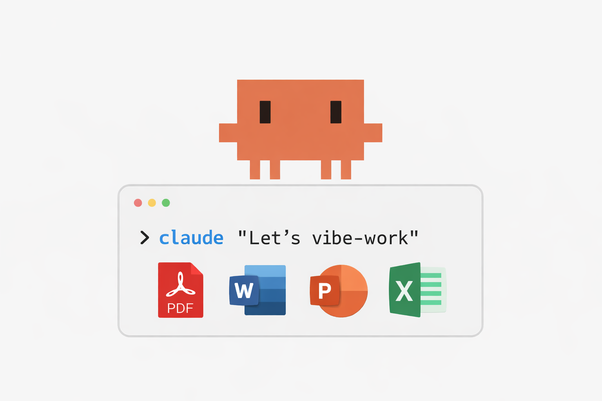

Have you ever wished you could just talk to your computer and have it handle your Office work? Open a PDF, copy the table, paste it into Excel, fix the formatting, copy again… you know the drill. I certainly got tired of this dance. What if there was a better way?
In this blog post, I’ll show you how to set up Claude Code on your Mac to work with your Office documents directly - no copying, no pasting, just describing what you want in plain English. Even if you’ve never written a line of code in your life.

The Copy-Paste Treadmill
If you’ve used ChatGPT, Claude.ai, or similar tools, you already know how useful they can be. But here’s the thing: these chat interfaces live in a browser window, completely disconnected from your actual files.
So the workflow becomes this awkward dance:
- Open a document on your computer
- Copy the relevant content
- Paste it into the chat
- Wait for the AI to respond
- Copy the response
- Paste it back into your document
- Repeat… and repeat… and repeat…
You end up being the middleman, constantly ferrying information back and forth between two worlds that can’t see each other. For a quick question? Sure, that works. But for real document work - transforming a PDF into an Excel spreadsheet, or creating a presentation from your notes - this copy-paste dance gets old fast.
And there’s a deeper issue: context. In a chat window, the AI only knows what you’ve explicitly told it. It can’t see your other files, doesn’t know your folder structure, and forgets everything the moment you close the tab. You’re constantly re-explaining the same things.
What If AI Could Come to Your Files?
Here’s a thought experiment: instead of bringing your files to the AI (copy-paste-copy-paste), what if the AI came to where your files live?
This is the key insight that makes tools like Claude Code genuinely useful. When AI runs locally on your machine with access to your files, the whole game changes:
- It can read your documents directly without copy & paste
- It sees the context of your project, including other files in the folder, naming conventions, and existing templates
- It can create new documents and save them right where you need them
- You build context incrementally by working in a folder, not by re-explaining everything each time
The result? You describe what you want in plain English, and the AI does the work. “Take this PDF and create an Excel spreadsheet with the schedule.” “Write a Word document summarizing these meeting notes.” “Create presentation slides for this project overview.”
No more being the copy-paste middleman.
Introducing “Vibe Working”
You may have heard of “vibe coding” - this trending approach where developers describe what they want in natural language and AI writes the code. It’s called “vibe coding” because you’re vibing with the AI, having a conversation, iterating together until you get what you want.
Here’s what I find interesting: the current focus for local AI tools has been almost exclusively on coding (hence names like “Claude Code” and “Cursor”). But the same principle applies to non-coding tasks just as well. I like to call this vibe working.
Vibe working = describing your Office tasks in natural language while AI handles the execution.
Whether you’re writing code or creating documents, the workflow is identical: describe, review, iterate, done. The only difference is the output format.
Why This Actually Matters
This isn’t just a slightly more convenient way to use AI. It’s a fundamentally different capability:
- It scales: once set up, you can process dozens of documents the same way you’d process one
- It’s consistent because the AI follows the same approach every time, reducing errors
- It’s buildable, meaning you can create reusable prompts for tasks you do often (that’s a topic for another post, but it’s definitely possible)
- Your files stay local since only the API calls go to the cloud while your documents never leave your machine
What We’ll Build Together
By the end of this post, you’ll have:
- Claude Code installed and configured
- Document processing skills that understand Word, Excel, PowerPoint, and PDF
- All the required libraries and tools installed
- A working example to prove it all works
But before we dive in, there’s something important to understand: AI doesn’t interact with documents the way you and I do.
When you work with Excel, you open the application, click through menus, type in cells. AI can’t do any of that. Instead, it reads and writes documents through code, manipulating file formats directly. This is actually a superpower (imagine processing hundreds of files automatically!), but it means we need to set up a proper workspace for AI to do its thing.
That’s what this guide is really about: building AI’s “office suite.”
I’ve aimed to give you a complete, working setup - no optional steps or “choose your own adventure.” Follow along, and you’ll have a local AI Office assistant ready to go.
A note on Claude for Work: Anthropic offers a cloud-based solution called “Claude for Work” that provides similar capabilities for teams. However, not everyone has access or is permitted to use it. This blog post provides a local alternative using Claude Code that works entirely on your own machine.
Prerequisites
Before we start, let’s make sure you have what you need:
- A Mac (this guide is macOS-specific; Apple Silicon recommended but Intel works too)
- Basic comfort with Terminal (I’ll guide you through every command, I promise)
- An Anthropic API key or Claude Max subscription for API access
Installing Homebrew (If You Don’t Have It)
Many of our installations use Homebrew, the popular macOS package manager. If you don’t have it yet, open Terminal and run:
/bin/bash -c "$(curl -fsSL https://raw.githubusercontent.com/Homebrew/install/HEAD/install.sh)"Follow the prompts, then verify it’s installed:
brew --versionYou should see something like Homebrew 4.x.x. If so, you’re good to go.
Installing Claude Code
Claude Code is Anthropic’s command-line interface to Claude. It runs in your terminal and can interact with files on your machine - reading, writing, and manipulating documents directly.
Prerequisites: Node.js
Claude Code requires Node.js. Let’s check if it’s installed:
node --versionIf you see a version number (like v20.x.x), you’re good. If not, install it via Homebrew:
brew install nodeInstallation
With Node.js in place, install Claude Code:
npm install -g @anthropic-ai/claude-codeFirst Run
After installation, start Claude Code by typing:
claudeThe first time you run it, you’ll be prompted to authenticate. Follow the instructions to connect your Anthropic account or enter your API key.
For detailed setup instructions and troubleshooting, see the official Claude Code documentation.
Installing the Document Skills
Here’s where things get interesting. Skills are specialized instruction sets that give Claude Code domain expertise. Think of them as recipe books: they contain detailed instructions for specific tasks - how to create a Word document with proper formatting, how to build an Excel file with formulas, how to design PowerPoint slides.
When you ask Claude to create a document, it consults these skills to know exactly how to do it.
Installing the Document Skills
To install the document skills package globally (available in any folder), run:
claude plugin install document-skills@anthropic-agent-skills --scope userThis installs skills for docx (Word documents), xlsx (Excel spreadsheets), pptx (PowerPoint presentations), and pdf files.
The --scope user flag makes these skills available globally, meaning you can use them in any folder on your machine. Without this flag, skills are installed only in the current project.
Setting Up Python (The Clean Way)
Office document processing relies heavily on Python libraries. Before installing them, let’s set up a proper Python environment.
Why a Separate Environment?
Your Mac comes with system Python that Apple uses for internal tools. You really shouldn’t install packages into it - doing so can break system functionality or create weird conflicts down the road.
The solution is to create a dedicated Python environment for Claude Code work. This keeps everything organized:
- Your system Python stays untouched
- All Claude Code packages live in one place
- If something breaks, you can rebuild the environment without affecting anything else
- The setup is reproducible - you can recreate it on another machine
Quick Start: Using the Pre-Configured Environment
To make this easier, I’ve created a ready-to-use Python environment with all the packages you need. It lives in my python-environments repository.
The claude-code environment includes everything for Office document processing: openpyxl for Excel, python-pptx for PowerPoint, pypdf and pdfplumber for PDFs, and more.
Here’s how to set it up:
Step 1: Install Miniforge
Miniforge is a minimal installer for conda, the Python environment manager. If you already have conda or Miniforge installed, skip to Step 2.
# Download the installer
curl -LO https://github.com/conda-forge/miniforge/releases/latest/download/Miniforge3-MacOSX-arm64.sh
# Run the installer
bash Miniforge3-MacOSX-arm64.shDuring installation: - Accept the license agreement - Use the default installation location (~/miniforge3) - Say yes when asked to initialize conda
After installation, restart your terminal or run:
source ~/.zshrcYou should see (base) appear at the start of your terminal prompt, indicating conda is active.
For the full story on Python environment management, including why this approach works well, see my blog post on Managing Python Environments.
Step 2: Clone and Build the Environment
Now let’s get the pre-configured environment:
# Clone the repository
git clone https://github.com/chrwittm/python-environments.git
# Navigate to the claude-code environment folder
cd python-environments/claude-code
# Run the setup script
bash rebuild_claude-code.shThe script creates a conda environment called claude-code with all required packages. This takes a few minutes - perfect time for a coffee break.
Step 3: Activate the Environment
Once the setup completes:
conda activate claude-codeYour prompt should now show (claude-code) instead of (base).
Verification
Let’s confirm everything is installed:
python3 -c "import openpyxl, pandas, pypdf, pdfplumber, reportlab, lxml; print('All Python packages OK')"If you see “All Python packages OK”, you’re ready to continue.
Installing Node.js Packages
Some document creation - particularly Word and PowerPoint - uses JavaScript libraries that produce higher-quality output than their Python equivalents. Let’s install these globally.
npm install -g docx pptxgenjsLet’s break this down: - npm install -g installs packages globally (available system-wide) - docx is a library for creating Word documents - pptxgenjs is a library for creating PowerPoint presentations
Verification
npm list -g docx pptxgenjsYou should see version numbers for both packages.
Installing Command-Line Tools
The final piece is a set of command-line tools that handle specialized tasks like PDF conversion, formula recalculation, and document transformation.
LibreOffice
LibreOffice is an open-source office suite. Claude Code uses it headlessly (without opening a window) for tasks like: - Recalculating Excel formulas (when you create an Excel file with formulas, LibreOffice computes the actual values) - Converting documents to PDF - Visual quality checks on presentations
brew install --cask libreofficeThis download is fairly large (~500 MB) but is well worth it for the capabilities it enables.
PDF and Document Utilities
brew install poppler pandoc qpdfLet’s break these down: - poppler provides PDF utilities like converting PDFs to images and extracting text - pandoc is a universal document converter (great for format transformations) - qpdf handles PDF manipulation tasks like merging and splitting
OCR Support
For working with scanned documents (PDFs that contain images of text rather than actual text):
brew install tesseractThe Python bindings (pytesseract and pdf2image) are already included in the claude-code environment we set up earlier.
Verification
Let’s confirm everything is installed:
which soffice && echo "LibreOffice OK"
which pdftotext && echo "Poppler OK"
which pandoc && echo "Pandoc OK"
which tesseract && echo "Tesseract OK"You should see “OK” for each tool.
Connecting Claude Code to Your Python Environment
One final configuration step. We need to tell Claude Code exactly which Python interpreter to use so it can access all the packages in your claude-code environment.
Important: These configuration files need to be created in each project folder where you want to use Claude Code for document work. Think of them as “project setup” files.
We’ll create two files:
Step 1: Create VS Code Settings
First, create a .vscode folder in your working directory:
mkdir -p .vscodeThen create .vscode/settings.json with exactly this content:
{
"python.defaultInterpreterPath": "~/miniforge3/envs/claude-code/bin/python",
"python.terminal.activateEnvironment": true,
"terminal.integrated.env.osx": {
"CONDA_DEFAULT_ENV": "claude-code"
}
}This configuration points to your claude-code Python interpreter and works whether you use VS Code as your editor or just run Claude from the terminal. It also provides a visual editor (VS Code) to review changes, which is helpful if you’re not a coder.
Step 2: Create a CLAUDE.md File
In the same working directory, create a file named CLAUDE.md with exactly this content:
# Claude Code Instructions
## Python Environment
Before executing any Python code or commands:
1. Check if `.vscode/settings.json` exists
2. If it contains `python.defaultInterpreterPath`, use that exact Python interpreter path for all Python commands
3. This ensures consistency with the VS Code Python interpreter configuration and guarantees access to all installed packages
Example: If the path is `~/miniforge3/envs/claude-code/bin/python`, use that full path instead of just `python` or `python3`.
Do NOT use `conda activate` or `source activate` - always use the direct interpreter path from the settings file.
## Document Generation Cleanup
After generating any document (PDF, Word, Excel, PowerPoint), clean up intermediate files:
1. Delete any `.py` files that were created to generate the document
2. Delete any `.js` files that were created to generate the document
3. Only keep the final output files (`.pdf`, `.docx`, `.xlsx`, `.pptx`)
This keeps the workspace clean for non-technical users.This file gives Claude Code explicit instructions about which Python to use and ensures generated files don’t leave behind clutter.
Why Both Files?
You might wonder why we need both. Here’s the reasoning: .vscode/settings.json tells your tools (VS Code, terminals) which Python to use, while CLAUDE.md tells Claude Code specifically how to behave in this project. Together, they ensure Claude Code always has access to your claude-code environment and all its packages, regardless of how you launch it.
Tip: For convenience, you can copy these two files (or the entire
.vscodefolder andCLAUDE.md) to any new project folder where you want to use Claude Code for document work.
Trying It Out: The Travel Itinerary Example
Let’s put everything together with a practical example. We’ll transform a travel itinerary through multiple document formats: PDF, Excel, Word, and PowerPoint.
The Scenario
Imagine you’ve booked a trip and received confirmation emails with flight times, hotel reservations, and activity bookings. You want to organize all this information into useful formats: an Excel schedule you can edit and track expenses in, a nicely formatted Word document to print or share, and PowerPoint slides to show your travel companions what’s planned.
Step 1: Create a Sample PDF
First, let’s have Claude Code create a sample travel itinerary we can work with. Create a working folder and set up the project configuration:
mkdir -p ~/Documents/travel-demo
cd ~/Documents/travel-demoCopy the .vscode folder and CLAUDE.md file from another project, or create them following the steps in “Connecting Claude Code to Your Python Environment” above.
Now start Claude Code:
claudeThen ask:
“Create a sample travel itinerary PDF for a 5-day trip to Barcelona. Include flight details, hotel information, and a few planned activities with times and costs.”
Claude Code will create a PDF file in your folder. This is our starting point.
Step 2: Transform to Excel
Now let’s extract that information into a spreadsheet:
“Read the travel itinerary PDF and create an Excel spreadsheet. Include columns for date, time, activity, location, and cost. Add a row that totals the costs.”
Claude Code reads the PDF, extracts the relevant information, and creates an organized Excel file with your schedule and a cost summary.
Step 3: Create a Word Document
Next, let’s create a formatted trip document:
“Using the travel itinerary data, create a Word document with the complete trip plan. Format it nicely with headings for each day, and add a packing checklist at the end.”
You’ll get a professional-looking Word document that’s easy to read, print, or share.
Step 4: Generate PowerPoint Slides
Finally, let’s create a presentation:
“Create a PowerPoint presentation summarizing the Barcelona trip. Make it visual and easy to understand - something I could show my travel companions to explain the plan.”
Claude Code generates slides with the key information from your trip.
What Just Happened?
In a few minutes of conversation, you:
- Created a sample document
- Transformed it into three different formats
- Got organized, formatted output ready to use
No copy-paste. No manual formatting. No switching between applications. You described what you wanted, and Claude Code handled the execution.
This is vibe working in action.
What You Can Do Now
With your setup complete, you have a versatile document assistant at your fingertips. Let me give you some ideas.
Document transformations are where this setup really shines. Convert a PDF report to an editable Word document, extract tables from a PDF into Excel, turn meeting notes into presentation slides, or merge multiple PDFs into one. The key is that Claude Code can read your source files directly and create the output in whatever format you need.
Creating documents from scratch works just as well. Need an Excel budget tracker with formulas? Just describe what you want. Want to generate a Word document from a template or build a presentation from an outline? Describe the structure and content, and let Claude Code handle the formatting.
Document analysis rounds out the capabilities. Summarize long documents, extract key information from contracts or reports, compare multiple documents, or search across files in a folder. Claude Code sees all the files in your working directory, so it can work with context that would be tedious to copy-paste into a chat window.
A few tips for getting the best results: Be specific in your requests (“Create an Excel file with columns for date, description, and amount” works better than “make a spreadsheet”). Keep related files in the same folder so Claude Code can see them and maintain consistency. Iterate rather than expecting perfection on the first try - ask for adjustments like “Make the headings bold” or “Add a summary section at the top.” And always review before sharing, because AI is helpful but not infallible.
Conclusion
Taking Claude Code from a developer tool to an Office automation assistant took a few steps, but I think you’ll find the result is worth it. You now have Claude Code with document skills installed, a clean Python environment with all required packages, Node.js libraries for high-quality document creation, and command-line tools for PDF conversion, OCR, and more.
More importantly, you have a new way of working with documents. Instead of the copy-paste dance between chat windows and your files, you can now describe what you want in plain English while working directly in your document folders.
Reflecting on What We Built
Remember the key insight from earlier: AI interacts with documents completely differently than humans do. We use graphical interfaces - clicking, typing, dragging. AI uses code - manipulating file formats directly through programming libraries.
What we’ve done in this guide is build a workspace suited to how AI actually works. The Python environment, the Node.js libraries, the command-line tools - these aren’t arbitrary requirements. They’re the equivalent of giving AI its own “office suite” that matches its way of working. Just as you need Excel installed to work with spreadsheets, AI needs openpyxl and pandas. Just as you need PowerPoint to create presentations, AI needs pptxgenjs.
The beautiful part is that once this workspace is set up, you don’t need to think about it anymore. You describe what you want in plain English, and AI translates that into the code-level operations that make it happen. The complexity is hidden; the power is accessible.
Looking Forward
This is just the beginning. As you get comfortable with the setup, you’ll find more ways to automate repetitive tasks. The travel itinerary example barely scratches the surface. You can create templates for recurring reports, build document processing pipelines, or even define your own custom skills for tasks specific to your work.
One last reflection: tools like Claude Code blur the line between “technical” and “non-technical” work. You don’t need to be a programmer to benefit from AI that understands your files. You just need to describe what you want clearly and let the AI handle the implementation details.
That’s the promise of vibe working - and now you’re set up to experience it.
Happy vibe working!